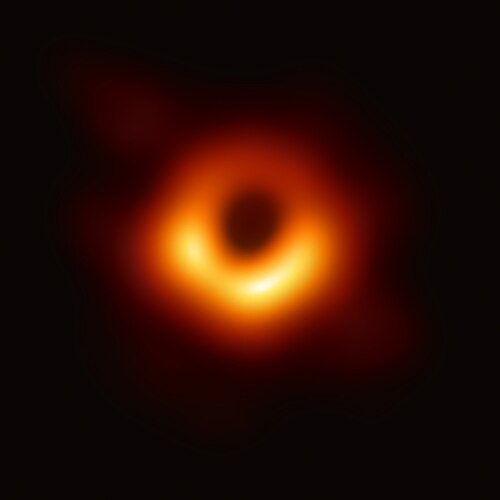

Franz Vera
Edad: 25 años
Cédula: 8-971-1172
Estudiante de desarrollo de software, me gusta la programacion y la tecnologia.

Interstellar
Año: 2014
Director: Christopher Nolan
Ciencia ficción sobre un grupo de astronautas que cruzan un agujero de gusano para buscar un nuevo hogar para la humanidad. Me gusta por cómo trata el tiempo, el espacio y la relación entre un padre y su hija.